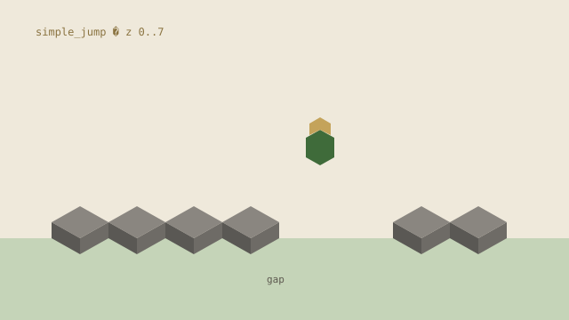

Bridging
Place the floor as you go.
Crossing a five-block void means sneaking, looking down, and putting stone underfoot. Human demos warm-start PPO; the rest is the same registry as parkour.
- 220-d obs
- 12 actions
- BC → SB3 PPO

Compose an environment, a reward, an algorithm, and a net. The agent sees numbers, not pixels — except when we ask it to dream.
Parkour
The agent crosses stone platforms from a 159-number state vector — body, goal, and a 5×5×6 occupancy grid. No pixels. A curriculum widens the gap and adds diagonals once it lands.

Bridging
Crossing a five-block void means sneaking, looking down, and putting stone underfoot. Human demos warm-start PPO; the rest is the same registry as parkour.
World models
Malmo steps are slow. A Dreamer-style model lets the agent train inside predicted futures. An ensemble splits pig-motion noise from model ignorance, then shortens the dream when the future is genuinely unpredictable. Shown on hunting.

Malmo needs Python 3.7. Training needs 3.10 and PyTorch. Two processes talk JSON over localhost. Swap an env, a reward, an algorithm, or a net — same loop. Register a new env in both env_server.py and train.py or training fails silently.